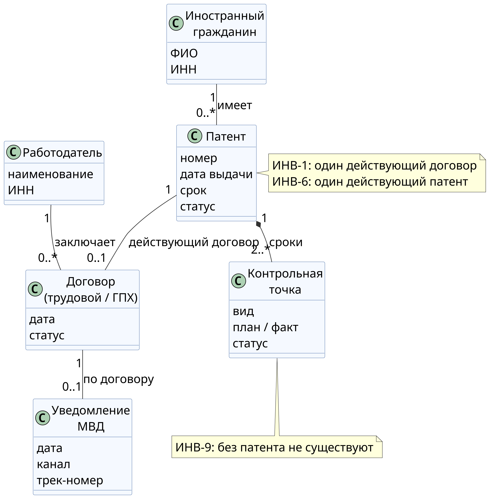
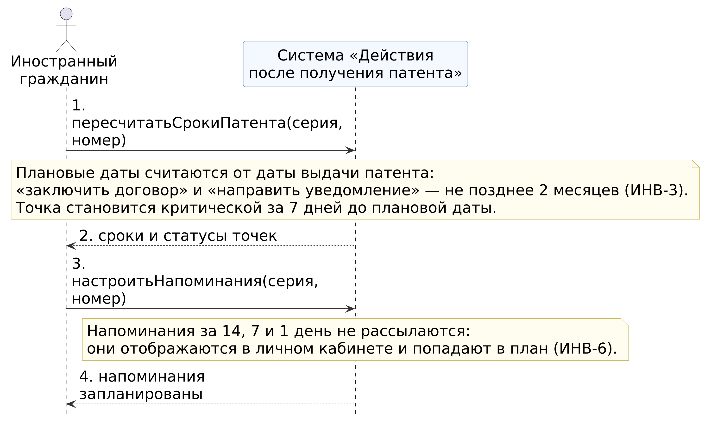

Дорожная карта описывает последовательность действий иностранного гражданина при трудоустройстве
в Российской Федерации: миграционный учёт, дактилоскопию и фотографирование, медицинское
освидетельствование, выбор порядка трудоустройства, подготовку документов, подачу заявления
и получение патента, действия после получения патента, участие в программе переселения, получение
разрешения на временное проживание и вида на жительство.
Объектом моделирования является седьмой раздел дорожной карты — действия после получения патента.
Раздел содержит две обязанности с общим сроком:
п. 7.1 — заключить трудовой договор или договор гражданско-правового характера в течение
двух месяцев с даты выдачи патента; обязанность адресована иностранному гражданину;
п. 7.2 — направить в территориальный орган МВД уведомление об осуществлении трудовой
деятельности с копией договора через единый портал государственных услуг или по почте; уведомление
направляется после заключения договора, но не позднее двух месяцев с даты выдачи патента;
обязанность адресована работодателю.
Оба срока отсчитываются от одной даты — даты выдачи патента, а не от даты въезда или заключения
договора. Второй особенностью является смена основного исполнителя: в п. 7.1 действует иностранный
гражданин, в п. 7.2 — работодатель. Ключевая дата подсистемы не меняется, даже если патент внесён
в систему с опозданием.
1.2. Границы подсистемы
Подсистема начинает работу в момент выдачи патента и завершается, когда обязанности по патенту
исполнены. В неё входят: учёт выданного патента и его реквизитов; расчёт срока «два месяца с даты
выдачи»; ведение контрольных точек и напоминаний; регистрация трудового договора или договора ГПХ
с проверкой соответствия патенту; подготовка и отправка уведомления в МВД; хранение квитанций,
трек-номеров и копии договора как доказательств отправки; фиксация нарушения срока.
Вход подсистемы — выданный патент (серия, номер, дата выдачи, срок действия, регион, профессия).
Выход — заключённый договор (7.1), направленное в МВД уведомление с копией договора (7.2),
доказательства отправки и актуальный статус сроков. Разделы 1–6 дорожной карты целиком предшествуют
выдаче патента и входят в работу как предусловия; разделы 8–11 относятся к темам других команд.
Границы жёсткие. Подсистема ведёт учёт, считает сроки, напоминает и хранит доказательства.
Она не создаёт обращений, не регистрирует иностранного гражданина в государственных органах,
не подаёт заявок, не отслеживает статусы рассмотрения и не обменивается данными с ведомственными
системами по API. Канал отправки выбирает исполнитель, а факт отправки и возврата фиксируется
в подсистеме.
1.3. Состав работ
Таблица 1 — Состав лабораторных работ и полученные результаты
№
Содержание работы
Результат
1
Определение функциональных требований
4 актора, 4 прецедента, 4 спецификации
2
Модель предметной области
13 классов, 7 инвариантов, предметные типы
3
Системные диаграммы последовательностей и спецификация операций
8 диаграмм, 10 операций
4
Диаграммы взаимодействия объектов
10 диаграмм коммуникаций
5
Диаграммы классов проектирования
26 классов, трассировка «операция — класс — метод»
6
Реализация программного обеспечения
FastAPI, 10 операций, 78 тестов
2. Определение прецедентов (лабораторная 1)
2.1. Акторы
Тип актора определяется его ролью в теме 7. У темы два основных исполнителя с разными обязанностями:
п. 7.1 адресован иностранному гражданину («трудоустроиться»), п. 7.2 — работодателю («уведомить МВД»).
Поэтому основной исполнитель меняется от прецедента к прецеденту, а «усреднённого» актора нет.
Таблица 2 — Акторы подсистемы
№
Актор
Тип
Роль в подсистеме
A1
Иностранный гражданин
основной (7.1)
владелец патента: вносит сведения о патенте, заключает договор, получает напоминания о сроках
A2
Работодатель / заказчик по ГПХ
основной (7.2)
заключает договор, направляет уведомление в МВД, получает сообщение о нарушении срока
A3
Сотрудник ОВМ МВД
вспомогательный
адресат уведомления; подсистема не принимает от него решений по патенту
A4
ЕПГУ / Почта России
вспомогательный
канал отправки: возвращает квитанцию (ЕПГУ) или трек-номер (почта)
МВД отнесено к вспомогательным акторам: подсистема формирует, отправляет и сохраняет доказательства
уведомления, а приём уведомления и решения по патенту выполняет ведомство. Работодатель и заказчик
по договору ГПХ объединены в одного актора — различие фиксируется видом договора. Медицинские
и образовательные организации не введены: их результаты — предусловия темы 7.
Прецеденты не смешиваются: учёт патента не содержит контроля сроков, контроль сроков не содержит
заключения договора, уведомление не содержит регистрации договора. У каждого своя цель, свой
исполнитель и свой устойчивый результат.
Отношений include и extend на диаграмме нет намеренно: четыре прецедента
независимы, а связь между ними задаётся предусловиями. П02 требует учтённого патента (результат П01),
П03 — заключённого договора (результат П02), П04 контролирует сроки, появившиеся при учёте патента.
Это внешние зависимости, а не обязательное включение шагов.
договор — не позднее двух месяцев с даты выдачи патента
7.2
направить в МВД уведомление с копией договора через ЕПГУ или по почте
П03 (основной), П02 (предусловие), П04 (контроль)
после договора и не позднее двух месяцев с даты выдачи патента
Оба срока привязаны к одной дате, поэтому П01 (учёт патента и расчёт срока) и П04 (контроль)
участвуют в обоих пунктах, хотя основными исполнителями пунктов являются разные акторы.
3. Модель предметной области (лабораторная 2)
3.1. Метод построения модели
Модель построена по существительным из спецификаций прецедентов: из текстов П01–П04 выписаны
понятия (патент, гражданин, работодатель, договор, уведомление, срок, контрольная точка, напоминание,
регион, профессия, документ, орган МВД) и превращены в классы. Глаголы сценариев (заключить,
направить, напомнить, пересчитать) в классы не превращаются: они выражены связями и контрольными
точками, а поведение появляется на следующем этапе.
Отдельно выделены два справочника — Регион и ВидДеятельности. Это классы
описаний: они описывают множество однотипных объектов, значения которых используются как характеристики
других объектов. Если бы регион и профессия остались строковыми атрибутами, их наименования
дублировались бы в каждом патенте и договоре. Абстракция в модели одна — Договор
с двумя правовыми формами; остальные классы конкретны.
3.2. Состав модели
Таблица 6 — Классы предметной области (13: 11 самостоятельных и 2 подкласса)
Класс
Атрибуты
Назначение
ИностранныйГражданин
фио, датаРождения, гражданство, документЛичности, инн, адресПребывания, телефон, email, статус
владелец патента, сторона трудовых отношений
Патент
серия, номер, датаВыдачи, срокДействия, органВыдавший, статус
право на работу в регионе по указанной профессии
Регион
код, наименование
справочник субъектов РФ; патент действует в регионе выдачи
датаНаправления, канал, номерКвитанции, трекНомер, статус
исполнение п. 7.2 с доказательствами отправки
КонтрольнаяТочка
вид, плановаяДата, фактическаяДата, критическая, статус
срок дорожной карты, за которым следит подсистема
Напоминание
датаОтправки, канал, текст, статус
предупреждение исполнителя о сроке
Документ
тип, имяФайла, хэш, датаЗагрузки, источник
вложение: скан патента, договор, копия, квитанция
ТерриториальныйОрганМВД
код, наименование, адрес
адресат уведомления
Типы атрибутов — предметные (Дата, СтатусПатента, КаналУведомления),
без привязки к языку программирования. Перечисления отдельными классами не вынесены: они не обладают
собственным жизненным циклом и входят в 13 классов как типы атрибутов.
Рисунок 2 — Полная диаграмма классов предметной области (13 классов,
с атрибутами)
3.3. Ядро модели и кратности
Что такое кратность. Кратность показывает, сколько объектов одного класса может быть
связано с одним объектом другого. Читается по стороне связи: 1 — ровно один;
0..1 — не больше одного, может не быть; 0..* — сколько угодно, включая
ноль. Запись «ИностранныйГражданин 1 → 0..* Патент» означает: у гражданина может быть несколько
патентов, а каждый патент принадлежит ровно одному гражданину. Кратности — это правила предметной
области; из них вырастают инварианты и проверки в коде.

Рисунок 3 — Ядро модели: гражданин — патент — договор — уведомление (фрагмент полной
диаграммы лабораторной 2)
Обозначения на диаграмме классов
Обозначение
В UML
В работе
линия
ассоциация
гражданин — патент, работодатель — договор
пустой ромб
агрегация: часть может существовать отдельно
патент — документ: скан можно удалить, он живёт сам
закрашенный ромб
композиция: части без целого не существует
патент — контрольная точка: удалили патент — точек нет
треугольник
обобщение (наследование)
договор — трудовой договор / договор ГПХ
1, 0..1, 0..*
кратность
число объектов на другом конце связи
Таблица 7 — Ключевые связи и кратности
Связь
Кратность
Смысл и инвариант
ИностранныйГражданин → Патент
1 → 0..*
патентов может быть несколько, действующий — не более одного (ИНВ-5)
Регион → Патент
1 → 0..*
патент действует только в выдавшем его субъекте
ВидДеятельности → Патент
1 → 0..*
в патенте указана профессия; работать по другой нельзя (ИНВ-4)
Патент → Договор
1 → 0..1
на патент — не более одного действующего договора (ИНВ-1)
Работодатель → Договор
1 → 0..*
у договора ровно один работодатель
Договор → ВидДеятельности
0..* → 0..1
вид работ по договору; основание проверки ИНВ-4
Договор → УведомлениеМВД
1 → 0..1
по договору направляется не более одного уведомления (ИНВ-7)
УведомлениеМВД → ТерриториальныйОрганМВД
0..* → 1
уведомление адресовано конкретному органу
Патент ◆→ КонтрольнаяТочка
1 *— 0..*
композиция: точки не существуют без патента (ИНВ-6)
КонтрольнаяТочка → Напоминание
1 → 0..*
серия предупреждений по одной точке
Патент, Договор, УведомлениеМВД ◇→ Документ
1 o— 0..*
агрегация: у документа один владелец, но сам документ существует отдельно
Кратности выбраны по факту: набор точек и документов может быть пустым, поэтому стоит
0..*, а обязательность выражают инварианты; там, где дубли невозможны, — 0..1.
3.4. Инварианты
Инварианты — утверждения, истинные в любой момент времени. На диаграмме классов они не изображаются,
но определяют её ограничения; в лабораторных 3–6 они превращаются в предусловия операций, проверки
в сервисах и тесты.
Таблица 8 — Инварианты предметной области
ID
Формулировка
ИНВ-1
на один патент — не более одного действующего договора одновременно
ИНВ-2
уведомление направлено не ранее даты договора и не позднее двух месяцев с даты выдачи патента
ИНВ-3
договор заключён не позднее двух месяцев с даты выдачи патента
ИНВ-4
вид деятельности по договору входит в перечень, указанный в патенте
ИНВ-5
у иностранного гражданина не более одного действующего патента
ИНВ-6
контрольные точки — композиция патента: не существуют без него
ИНВ-7
смена работодателя требует нового уведомления МВД
3.5. Сроки и напоминания
Единственная точка отсчёта — дата выдачи патента. От неё подсистема рассчитывает предельную дату
трудоустройства и формирует контрольные точки: заключение договора (п. 7.1), направление уведомления
(п. 7.2) и окончание срока действия патента. Каждая точка имеет плановую и фактическую дату, признак
критичности и статус; к точке привязана серия напоминаний — за 14, 7 и 1 день.
Рисунок 3 — Сроки, контрольные точки и напоминания
Два месяца исчисляются календарными месяцами с прижатием к концу месяца: 31 января плюс один месяц —
28 или 29 февраля. Правило живёт в одном месте — в классе СервисСроков; оно используется
при регистрации патента и при пересчёте сроков, поэтому не расходится по сценариям. Позднее внесение
патента в подсистему срок не изменяет: предельная дата остаётся равной дате выдачи плюс два месяца,
а подсистема показывает остаток срока и признак просрочки.
4. Системные операции и диаграммы последовательностей (лабораторная 3)
4.1. Метод описания операций
Внешнее поведение подсистемы описано системными операциями — сообщениями, которыми действующие лица
обмениваются с системой. Для каждой операции определены параметры, результат, предусловия
и постусловия. Диаграммы строятся как SSD («чёрный ящик»): в каждой одна линия жизни системы,
а сообщения — вызовы операций и возвраты результата. Проверки, расчёты и запись в хранилище
инициируются не актором, поэтому показаны примечанием; их внутреннее устройство раскрывает
лабораторная 4.
Построено восемь диаграмм: по одной на основной сценарий каждого прецедента и по одной на наиболее
существенную альтернативу — повторный ввод патента, отказ работодателя, отправка почтой с возвратом
отправления, просрочка срока. Ветви, которые не меняют набор операций (ошибки реквизитов,
несоответствие профессии, отправка задним числом), отражены в постусловиях спецификации, а не
отдельными диаграммами.
Таблица 11 — Системные операции и проверяемые инварианты
№
Операция
Прецедент
Класс-владелец
Инварианты
1
зарегистрироватьПатент
П01
СервисПатентов
ИНВ-3, ИНВ-5, ИНВ-6
2
пометитьПатентАрхивным
П01
СервисПатентов
ИНВ-5, ИНВ-6
3
получитьСведенияОпатенте
П02
СервисПатентов
ИНВ-4, ИНВ-5
4
заключитьДоговор
П02
СервисДоговоров
ИНВ-1, ИНВ-3, ИНВ-4
5
отменитьДоговор
П02
СервисДоговоров
ИНВ-1
6
направитьУведомлениеМВД
П03
СервисУведомлений
ИНВ-2, ИНВ-7
7
зафиксироватьВозвратУведомления
П03
СервисУведомлений
ИНВ-2
8
настроитьНапоминания
П04
СервисСроков
ИНВ-6
9
пересчитатьСрокиПатента
П04
СервисСроков
ИНВ-2, ИНВ-3, ИНВ-6
10
зафиксироватьНарушениеСрока
П04
СервисСроков
ИНВ-2, ИНВ-3
Десять операций покрывают все восемь диаграмм: сквозные операции вызываются из разных прецедентов,
но имеют одного владельца в управляющем слое.
4.3. Ключевые сценарии
Регистрация патента — вход подсистемы. Операция проверяет, что у гражданина нет другого действующего
патента (ИНВ-5), рассчитывает предельную дату трудоустройства от даты выдачи и создаёт контрольные
точки. Признак просрочки вычисляется сразу, если патент внесён позже срока. Сценарий показан
на рисунке 4.
Рисунок 4 — Операция 1 «зарегистрироватьПатент»: проверка ИНВ-5, расчёт срока,
создание контрольных точек
Перед заключением договора работодатель получает сведения о патенте: действует ли он, в каком регионе
выдан и какие профессии допускает. Затем проверяются отсутствие действующего договора (ИНВ-1), срок
трудоустройства (ИНВ-3) и соответствие вида работ патенту (ИНВ-4). Просрочка не блокирует регистрацию:
договор сохраняется с признаком просрочки, а контрольная точка закрывается фактической датой.
Сценарий показан на рисунке 5.
Уведомление направляется после заключения договора и не позднее двух месяцев с даты выдачи патента
(ИНВ-2). Канал — параметр операции: ЕПГУ возвращает квитанцию, почта — трек-номер и опись вложения.
Если срок нарушен, подсистема требует явного подтверждения исполнителя и фиксирует уведомление
со статусом «просрочено»: обязанность исполняется, но её нарушение остаётся видимым. Повторное
уведомление по тому же договору запрещено (ИНВ-7). Сценарий показан на рисунке 6.
Рисунок 6 — Операция 6 «направитьУведомлениеМВД» (п. 7.2): канал отправки,
квитанция и копия договора как доказательства
4.4. Контроль сроков
Контроль сроков вызывается с экрана сроков: фонового расписания в подсистеме нет, состояние всегда
выводимо из данных. Операция 9 пересчитывает плановые даты контрольных точек и переводит их
в критические и просроченные; операция 8 создаёт серию напоминаний. Если срок истёк, альтернативный
сценарий фиксирует нарушение отдельной операцией 10 — это юридически значимый факт, который нельзя
выразить одним лишь напоминанием. Сценарий показан на рисунке 7.

Рисунок 7 — Прецедент П04: пересчёт сроков и настройка напоминаний
5. Диаграммы коммуникаций (лабораторная 4)
5.1. Одна операция — одна диаграмма
Лабораторная 4 раскрывает «чёрный ящик» лабораторной 3: каждая системная операция разворачивается
в последовательность обращений между объектами — граничными экранами, сервисами, сущностями,
хранилищами и шлюзами. Принцип задан заданием: диаграмма строится для каждой системной функции,
поэтому десяти операциям соответствуют ровно десять диаграмм, и ни одна операция не остаётся
без диаграммы.
Состав объектов ограничен классами проектирования: четыре экрана, четыре сервиса, 13 сущностей,
три репозитория и два шлюза. Акторы лабораторной 1 не рисуются отдельными объектами — их роль выполняет
граничный экран. Сообщения нумеруются по UML: верхний уровень — 1, 2,
вложенные вызовы — 1.1, 1.2, возвраты — пунктирной стрелкой. Привязки к языку
и фреймворку нет.
5.2. Состав диаграмм
Таблица 12 — Диаграммы коммуникаций: операция, объекты, сообщения
№
Операция
Прецедент
Объектов
Сообщений
01
зарегистрироватьПатент
П01
9
14
02
пометитьПатентАрхивным
П01
6
10
03
получитьСведенияОпатенте
П02
7
10
04
заключитьДоговор
П02
8
14
05
отменитьДоговор
П02
6
8
06
направитьУведомлениеМВД
П03
10
17
07
зафиксироватьВозвратУведомления
П03
8
11
08
пересчитатьСрокиПатента
П04
5
9
09
настроитьНапоминания
П04
5
8
10
зафиксироватьНарушениеСрока
П04
5
9
Итого
69
110
Числа даны с повторами между диаграммами: диаграмма — это вид модели, а не её часть. Владелец
операции один — первое сообщение приходит на сервис, поэтому проверки инвариантов сосредоточены
в управляющем слое.
5.3. Примеры взаимодействия объектов
В операции 1 видно разделение обязанностей: экран только передаёт данные и показывает результат,
сервис патентов проверяет ИНВ-5 и координирует сценарий, расчёт срока выполняет сервис сроков,
справочники дают допустимые профессии, а сохранение идёт через репозиторий патентов вместе
с контрольными точками (рисунок 8).
Рисунок 8 — Операция 1 «зарегистрироватьПатент»: экран → сервис → расчёт сроков,
справочник и репозиторий
В операции 6 канал — параметр операции, поэтому на одной диаграмме показаны оба шлюза со стражами
[канал = ЕПГУ] и [канал = почта]. Разводить их на две диаграммы нельзя:
это нарушило бы правило «одна операция — одна диаграмма». Различаются только шлюзы; проект
уведомления, проверки срока и сохранение доказательств одинаковы для обоих каналов (рисунок 9).
Рисунок 9 — Операция 6 «направитьУведомлениеМВД»: два канала отправки под стражами
«ЕПГУ» и «почта»
6. Классы проектирования (лабораторная 5)
6.1. Слои модели
Модель проектирования построена по схеме BCE (boundary — control — entity) и дополнена двумя
техническими слоями — репозиториями и шлюзами. Всего 26 классов: 4 граничных, 4 управляющих,
13 сущностей, 3 репозитория и 2 шлюза. Зависимости направлены только вниз: граничный слой знает
управляющий, управляющий — сущности, репозитории и шлюзы; сущности не зависят от внешних слоёв.
Каждый класс участвует хотя бы в одной из десяти операций: в модели нет «запасных» элементов.
Один экран обслуживает один прецедент: ЭкранПатента — операции 1–3,
ЭкранДоговора — 4–5, ЭкранУведомления — 6–7, ЭкранСроков — 8–10.
У экрана нет атрибутов: состояние формы — деталь реализации; в модели важно только то, что экран
принимает данные операции и показывает результат. Репозиторий выделен на агрегат: патент хранится
вместе с контрольными точками и напоминаниями, договор и уведомление — отдельно. Шлюз выделен
на канал: у него один метод отправить, и он не отслеживает статусы доставки.
6.2. Трассировка операций
Каждая из десяти операций имеет ровно один метод-владелец, а имена методов совпадают с именами
операций, поэтому трассировка не требует таблицы переименований.
Таблица 13 — Соответствие «системная операция — класс — метод»
№
Операция
Класс
Метод
1
зарегистрироватьПатент
СервисПатентов
зарегистрироватьПатент()
2
пометитьПатентАрхивным
СервисПатентов
пометитьПатентАрхивным()
3
получитьСведенияОпатенте
СервисПатентов
получитьСведенияОпатенте()
4
заключитьДоговор
СервисДоговоров
заключитьДоговор()
5
отменитьДоговор
СервисДоговоров
отменитьДоговор()
6
направитьУведомлениеМВД
СервисУведомлений
направитьУведомлениеМВД()
7
зафиксироватьВозвратУведомления
СервисУведомлений
зафиксироватьВозвратУведомления()
8
настроитьНапоминания
СервисСроков
настроитьНапоминания()
9
пересчитатьСрокиПатента
СервисСроков
пересчитатьСрокиПатента()
10
зафиксироватьНарушениеСрока
СервисСроков
зафиксироватьНарушениеСрока()
Согласование с лабораторной 4 проверяется в обе стороны: каждый объект диаграмм коммуникаций —
класс этой модели с тем же именем, а каждое сообщение объясняется методом или зависимостью. Отличия
сознательны: контроль сроков и напоминания объединены в СервисСроков, общее хранилище
лабораторной 4 разделено на три репозитория по агрегатам, актор заменён экраном.
Модель не привязана к языку реализации: вместо типов языка используются предметные
(Дата, Признак, ФИО, ИНН, ОГРН,
НомерДокумента, КодРегиона, Наименование, Адрес,
Основание, Должность, ПредметРабот, ТрекНомер),
а технические понятия — HTTP, SQL, ORM, форматы сериализации — отсутствуют. У сущностей сохранены
только атрибуты: ни методов, ни модификаторов видимости, ни суррогатных ключей.
6.4. Принятые решения
BCE сохранён: это модель обязанностей, а не структура фреймворка — она отвечает на вопрос
«кто с кем разговаривает» и повторяет деление лабораторной 4, не задавая языка реализации.
Правило сроков живёт в одном классе: «два месяца с даты выдачи» используется операциями 1
и 8–10, иначе оно разошлось бы по четырём классам. Проверки инвариантов — в управляющем слое,
а не в экране: ИНВ-1, ИНВ-3, ИНВ-4 проверяет СервисДоговоров, ИНВ-5 —
СервисПатентов, ИНВ-2 и ИНВ-7 — СервисУведомлений. Репозиторий выделен
на агрегат — одно хранилище на все сущности превращается в связанный «бог-объект». Шлюз выделен
на канал: проект уведомления формируется один раз и одинаково для ЕПГУ и почты, различаются только
классы-шлюзы.
7. Реализация (лабораторная 6)
7.1. Стек и структура
Программное обеспечение реализовано на Python 3.12 с использованием FastAPI и uvicorn; зависимости
ставятся через uv, тесты — pytest. Структура приложения повторяет слои модели:
граничному слою соответствуют роутеры и схемы запросов, управляющему — сервисы и модуль инвариантов,
слою сущностей — классы предметной области. Хранилища реализованы в памяти за интерфейсами
репозиториев, взаимодействие с внешними каналами — через шлюзы-заглушки с детерминированными ответами.
lab6-implementation/
├── app/boundary/ роутеры и схемы запросов (4 экрана)
├── app/control/ сервисы, invariants.py (7 инвариантов)
├── app/entity/ 13 сущностей модели предметной области
├── app/repository/ in-memory репозитории за интерфейсами
├── app/gateway/ ШлюзЕПГУ и ШлюзПочты, режим отказа источника
├── app/container.py единственное место сборки зависимостей
└── tests/ 78 тестов
7.2. Соответствие модели проектирования
Таблица 14 — Соответствие слоёв модели и модулей реализации
Слой модели
Модуль
Что внутри
Границы (4 класса)
app/boundary/
роутеры экранов, схемы запросов
Управление (4 класса)
app/control/
четыре сервиса, проверки инвариантов
Сущности (13 классов)
app/entity/
13 классов предметной области, перечисления
Репозитории (3)
app/repository/
хранение агрегатов в памяти
Шлюзы (2)
app/gateway/
отправка через ЕПГУ и почту
Реализованы все десять операций; всего маршрутов двадцать — десять операций и десять служебных
чтений (справочники, карточки, здоровье приложения). Зависимости идут только вниз:
boundary → control → entity, а управляющий слой обращается к репозиториям и шлюзам через
конструкторы. Роутеры не меняют сущности и не ходят в хранилище.
Режим отказа источника включается переменной окружения или полем запроса: шлюз возвращает ошибку,
а сервис сохраняет уведомление в статусе «ошибка» с номером попытки и ссылкой на следующую операцию —
задача не теряется. Так выполнено требование «всё, что обещаем, должны сделать»: у каждого
объявленного состояния есть код, который его создаёт.
7.3. Инварианты в коде
Все семь инвариантов реализованы в модуле invariants.py и вызываются из сервисов,
а не из HTTP-обработчиков: правило действует и при прямом вызове сервиса, что используется в тестах.
На каждый инвариант есть отдельный тест.
Блокируются юридически невозможные действия: второй действующий договор на патент,
повторное уведомление по тому же договору, профессия вне патента, второй действующий патент —
ответ 409 или 422 с кодом инварианта.
Просрочка фиксируется, а не блокируется: договор после срока регистрируется с признаком
просрочки, уведомление после срока — после явного подтверждения исполнителя, со статусом
«просрочено».
Целостность агрегата обеспечена структурно: точка не создаётся без патента, напоминание —
без точки; архивация патента каскадно отменяет точки и напоминания.
Доказательства хранятся бессрочно: в репозиториях нет операции удаления уведомлений
и документов.
7.4. Тесты и запуск
Таблица 15 — Структура тестов
Файл
Тестов
Что покрывает
tests/test_patents.py
12
операции 1–3: карточка, точки, дубль, профессия, архив
tests/test_contracts.py
14
операции 4–5: трудовой и ГПХ, документ, ИНВ-1/4, просрочка, отмена
tests/test_notifications.py
11
операции 6–7: ЕПГУ и почта, окно ИНВ-2, отказ шлюза, возврат, повтор
tests/test_deadlines.py
11
операции 8–10: напоминания, пересчёт, критичность, эскалация
tests/test_invariants.py
11
по одному-два теста на каждый из ИНВ-1…ИНВ-7
tests/test_gateways.py
3
детерминированные квитанции, трек-номер, режим отказа
tests/test_system.py
5
здоровье, справочники, ровно 20 маршрутов в OpenAPI
Итого
67
все проходят
Тесты работают на неподвижных часах и на чистом in-memory контейнере с демо-данными, поэтому даты
и результаты детерминированы.
Демонстрационный сценарий проходит по одной операции на шаг и показывает основную ветвь вместе
с альтернативами: просрочка фиксируется, уведомление после срока требует подтверждения, возврат
отправления переоткрывает задачу.
Заключение
В работе построена модель подсистемы «Действия после получения патента» — ровно раздела 7 дорожной
карты. Определены 4 актора и 4 прецедента, описана модель предметной области из 13 классов с семью
инвариантами, определены 10 системных операций, для них построены 8 диаграмм последовательностей
и 10 диаграмм коммуникаций, разработаны 26 классов проектирования и выполнена реализация, которая
этой модели соответствует: 10 операций, 20 маршрутов, 78 тестов.
Сквозным элементом всех этапов являются инварианты предметной области: они задают кратности
и ограничения модели, становятся предусловиями операций, проверками в сервисах и тестами. Трассировка
«пункт дорожной карты — прецедент — операция — класс — метод — маршрут — тест» выполнена для всех
десяти операций, поэтому расхождений между лабораторными нет. Границы выдержаны на всех уровнях:
подсистема ведёт учёт, считает сроки, напоминает и хранит доказательства — и не обещает того, чего
не делает.
Ограничения работы сознательные. Хранилища находятся в оперативной памяти и не сохраняют состояние
между запусками; шлюзы внешних каналов — заглушки с детерминированными ответами, без реальных
протоколов и электронной подписи; файлы хранятся как метаданные и хеш; аутентификации нет, поскольку
роли и права не входят в предметную область темы. Срок «два месяца» принят календарным, с прижатием
к концу месяца, — это решение модели, а не норма закона.
Дальнейшее развитие связано с переходом к реляционной базе данных и закреплением инвариантов
ограничениями и частичными уникальными индексами, с контрактными тестами шлюзов и объектным
хранилищем документов, а также с генерацией клиента из OpenAPI. Эти шаги не меняют модель: они
доводят до промышленного уровня то, что уже описано и проверено.